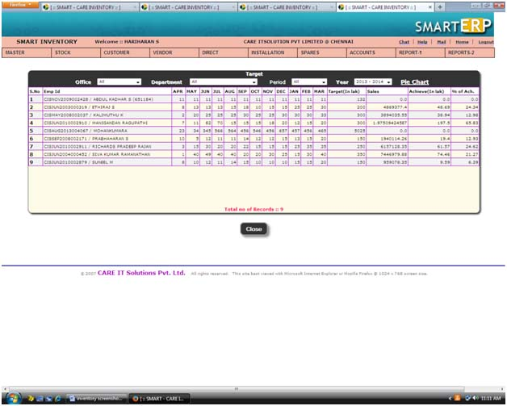
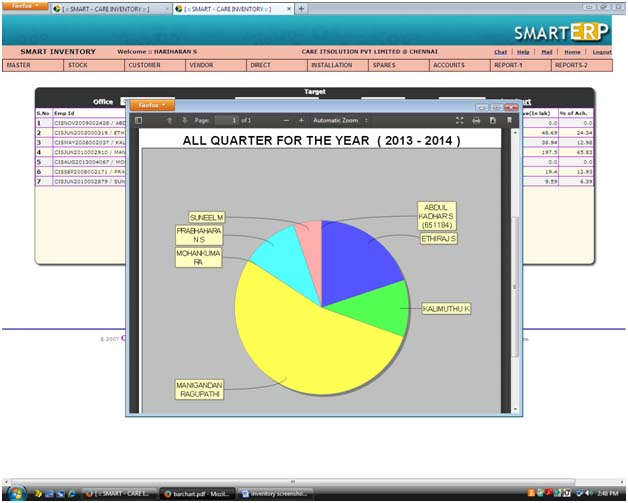
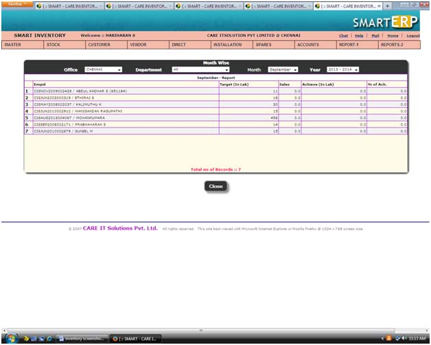
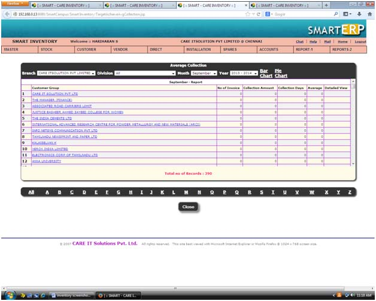
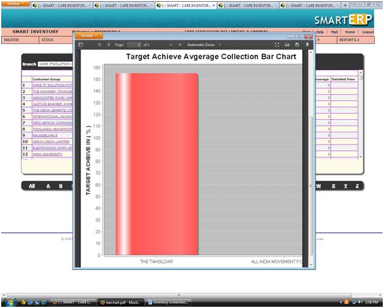
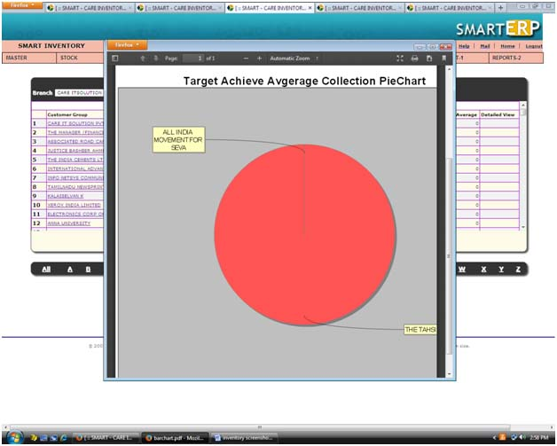
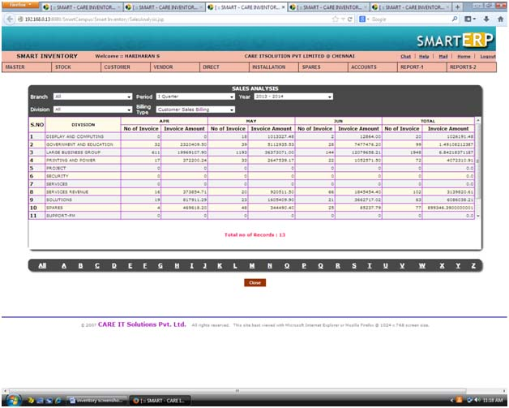

|
||
Target Achieve |
||
| This is target achieve view screen.we can create chart for target achieve | ||
| To filter target archieve by using alphabetic filter, office, department,period, year . | ||
|  | ||
Piechart : |
||
| To create a pie chart for quarter for target achieve by using pie chart link in target view page. | ||
|  | ||
Month : |
||
| This is month wise target achieve view screen. | ||
| To filter monthwise target archieve by using alphabetic filter, office, department,period, year . | ||
|  | ||
Average collection : |
||
| This is target achieve average collection view screen.we can create chart for target achieve average collection as bar chart,pie chart | ||
| To filter target archieve average collection by using alphabetic filter, branch, division,month, year | ||
|  | ||
Bar chart : |
||
| To create a bar chart for target achieve average collection by using bar chart link in target view average collection page. | ||
|  | ||
| Piechart : | ||
| To create a pie chart for quarter for target achieve average collection by using pie chart link in target view average collection page | ||
|  | ||
Sales analysis : |
||
| This is sales analysis target achieve view screen | ||
| To filter sales analysis target archieve by using alphabetic filter, branch,division,calling type,period, year | ||
|  |